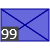
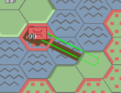

{pl|KAMPANIA|en|CAMPAIGN}
TUTORIAL
{pl|Generator rozgrywek|en|Game generator}
Menu
polski

English
Nowa gra
{pl|Ilość hexów na boku|en|Number of hexes on the side}: 15
{pl|Ilość lądu|en|Land amount}: 50%
{pl|Ilość gór na lądzie|en|Amount of mountains on land}: 10%
{pl|Ilość miast|en|Number of towns}: 24
{pl|Stawianie oddziałów|en|Unit placement}
{pl|Wybierz jednostkę do rozmieszczenia|en|Choose an unit to place}:
{pl|Wielkość oddziału|en|Size of an unit}:
50
{pl|Wszystkim po równo|en|Everyone has equal teams}
CZERWONI
Batalion piechoty
{pl|(1 mieszkaniec - 5 saperów, minimum 10 mieszkańców)|en|(1 inhabitant - 5 engineering troops, minimally 10 inhabitants)}
CZERWONI
Czerwoni
{pl|Podatek|en|Tax}: 23% (SunOfPeru approves)
{pl|Rozmiar|en|Size}: 50
{pl|Inwestycje|en|Investments}:
{pl|Wielkość|en|Amount}:
50
{pl|HISTORIA|en|HISTORY}
Tutorial
{pl|Cel|en|Goal}: {pl|Przenieś jednostki w docelowe miejsca (purpurowe kontury)|en|Move units to their destinations (purple contours)}
{pl|Wskazówki|en|Hints}:
1.

{pl|Aby zaznaczyć oddział, kliknij na niego. Należy kliknąć na prostokąt, który zakrywa obszar oddziału o wielkości 99.|en|To select an unit, click on it. You have to click a rectangle that covers an area of a unit if it would have full size}
2.
{pl|Aby odznaczyć oddział, kliknij na dolną część sześciokąta, na którym jest oddział lub dowolny niepodświetlony sześciokąt, albo na obszar planszy bez sześciokątów.|en|To deselect a unit, click on the bottom part of a hexagon where the unit is placed or on an unhighlighted hexagon or on a board area without hexagons. }
3.

{pl|Po zaznaczeniu oddziału podświetlą się sześciokąty, na które możesz zaprowadzić drogę, którą poruszy się oddział.|en|After selecting a unit, some hexagons will be highlighted and you can lead a path on them. The unit will move along this path after the end of the turn.}
{pl|W panelu sterowania (na prawo od planszy) pojawi się nowa strona, którą na razie można zignorować. |en|In the control panel (right of the board) a new page will appear, but now you can ignore it.}
4.
{pl|Po zaprowadzeniu drogi możesz ją przedłużyć w dowolnym kierunku.|en|After leading a path, you can prolong it in any direction.}
5.

{pl|Aby zakończyć prowadzenie drogi można|en|To end leading a path you can}:
-{pl|kilkąć 2-krotnie na miejsce docelowe|en|click twice on the destination place}
-{pl|kilkąć w dowolne niepodświetlone miejsce na planszy (niezależnie, czy to sześciokąt, czy białawy obszar poza planszą)|en|click on any unhighlighted place on the board (it doesn't matter if it's a hexagon or the white-ish area on the edges)}
6.

{pl|Aby usunąć drogę, należy zaznaczyć oddział i kliknąć na obszar sześciokąta, na którym jest dany oddział, który nie jest przykryty przez oddział, gdyby miał wielkośc 99.|en|To remove a path, you have to select a hexagon area where the unit is placed, but not covered by a hipothetical unit of the max size.}
{pl|Intuicyjnie jego dolną część.|en|Intuitively the bottom part of the hexagon.}
7.
{pl|Aby zakończyć turę i ruszyć oddziały, należy odznaczyć oddział i kliknąć na przycisk|en|To end a turn and let the units move, you have to deselect a unit and click} "{pl|ZAKOŃCZ TURĘ|en|END TURN}"{pl|.|en| button.}
{pl|Oddziały lekkie mogą podczas jednej tury poruszać się po lądzie o liczbę pól odpowiednią do swojej szybkości, a przy wchodzeniu na górę o 1 pole.|en|During one turn, light units can move through the number of hexagons equal or lesser than its speed and if they're climbing a mountain, only through 1 hexagon.}
{pl|Oddziały górskie mogą podczas jednej tury poruszać się zarówno po lądzie i po górach o liczbę pól odpowiednią do swojej szybkości (jedynie 2).|en|During one turn, mountain units can move through number of hexagons equal or lesser than its speed on both land and mountains}
{pl|Oddziały|en|Units}:
{pl|Piechota|en|Infantry}

| {pl|Szybkość|en|Speed} | 2 |
| {pl|Rodzaj|en|Type} | {pl|lekki|en|light} |
{pl|Piechota zmotoryzowana|en|Motorized infantry}

| {pl|Szybkość|en|Speed} | 5 |
| {pl|Rodzaj|en|Type} | {pl|lekki|en|light} |
{pl|Piechota górska|en|Mountain infantry}
| {pl|Szybkość|en|Speed} | 2 |
| {pl|Rodzaj|en|Type} | {pl|górski|en|mountain} |
{pl|Cel|en|Goal}: {pl|Przenieś jednostki w docelowe miejsca (purpurowe kontury)|en|Move units to their destinations (purple contours)}
{pl|Wskazówki|en|Hints}:
1.

{pl|Na stosie na sześciokącie (8,4) są 4 oddziały: 3 oddziały czołgów i 1 oddział piechoty na samym spodzie.|en|On a stack on the (8,4) hexagon there are 4 units: 3 tank units and one infantry unit on the bottom of the stack.}
{pl|Zaznacz oddział na wierzchu stosu, klikając na niego. Tasuj oddziały, klikając ponownie na nie, aż oddział piechoty będzie na wierzchu.|en|Choose an unit on the top of the stack by clicking on it. Shuffle units by clicking again on them until an infantry unit will be on the top.}
{pl|W panelu sterowania można zobaczyć kolejność oddziałów na stosie pod zaznaczonym oddziałem.|en|In the control panel you can see the order of units on the stack which are below of the selected unit.}
2.
{pl|Wejdź oddziałem piechoty na górę na północno-zachodni (lub południowo-zachodni) sześciokąt.|en|Move the infantry unit to the mountain on the north-western (or south-western) hexagon}
{pl|Zakończ turę|en|End turn}.
3.
{pl|Podziel ów oddział piechoty|en|Divide this infantry unit}.
{pl|Można to zrobić na 2 sposoby|en|You can do this in 2 ways}:
-{pl|zaznacz oddział piechoty i kliknij na niego jeszcze raz. Wtedy z oddziału wydzielony zostanie oddział o wielkości 10 i przeniesiony na spód stosu.|en|select an infantry unit and click on it one more time. A smaller unit of size 10 will be carved out of the unit and moved to the bottom of the stack.}
{pl|UWAGA!|en|NOTICE!} {pl|Działa to jedynie na oddziałach, które są jedyne na ich sześciokącie.|en|It works only for units which are alone on their hexagon.}
-{pl|po zaznaczeniu oddziału, w panelu sterowania widoczny jest panel dzielenia/rozbudowy oddziału.|en|after selecting an unit, there is a division/building section in the control panel.}
{pl|na pasku, w tym panelu można zaznaczyć liczebność oddziałów, które powstaną ze starego oddziału po podzieleniu. Aby podzielić oddział w dokładny sposób, należy klinkąć przycisk "PODZIEL"|en|in this section you can set the size of units that will be crated from the old unit after dividing them. To divide a unit in a precise way you have to click "DIVIDE" button}
-{pl|alternatywnie, można klinkąc przycisk "ZOSTAW 10", przez co z oddziału wydzielony zostanie oddział o liczebności 10|en|alternatively, you can click "LEAVE 10" and an unit of size 10 will be created}
{pl|UWAGA!!!|en|NOTICE!!!}
{pl|Dzielenie oddziałów nie działa, gdy na sześciokącie, gdzie znajduje się dany oddział są 4 oddziały (maksymalna liczba).|en|Dividing units doesn't work if there are 4 units (maximum number) on a hexagon}
4.
{pl|Poprowadź podzielone oddziały na docelowe miejsca. Pamiętaj, że oddziały na jednym sześciokącie można "tasować".|en|Move the divided units to their destination places}
{pl|Zakończ turę|en|End turn}.
5.
{pl|Na sześciokącie (8,1) znajduje się stos oddziałów czołgów. Jeden z nich powinien przejść na pole (10,3), ale jest blokowany przez 3 stosy oddziałów artylerii, ponieważ na jednym sześciokącie nie może być więcej, niż 4 oddziały.|en|On (8,1) hexagon there is a stack of tank units. One of them should move to (10,3) field, but it's being blocked by 3 stacks of artillery units because there can be no more than 4 units on one hexagon.}
{pl|Aby połączyć oddziały, należy zaznaczyć oddział na szczycie stosu i z panelu sterowania wybrać oddział z tego samego stosu, z którym zaznaczony oddział ma zostać połączony. Oddziały na stosie, które mogą być połączone z zaznaczonym oddziałem mają niebieski kwadrat po prawej stronie.|en|In order to merge units, you have to select a unit on the top of the stack and select a unit from the same stack in the control panel, with which the unit will be merged}
{pl|UWAGA!!!|en|NOTICE!!!} {pl|Można łączyć jedynie oddziały tego samego rodzaju.|en|You can merge only units of the same type.}
{pl|Po "udrożnieniu" drogi oddział czołgów może przejechać w docelowe miejsce.|en|After clearing the path, a tank unit can finally go to the destination.}
6.
{pl|Oddziały można łączyć też w inny sposób. Dotyczy to oddziałów tego samego typu, ale na różnych heksach, oddalonych od siebie o zasięg oddziału plus jeden.|en|Units can also be merged in a different way. It applies for units of the same type, but on different hexagons far from themselves up to their speed plus 1.}
{pl|Należy zaznaczyć jeden oddział obrony przeciwlotniczej. Ponieważ oddział ten znajduje się obok drugiego oddziału obrony przeciwlotniczej, ten drugi oddział będzie miał kontury podświetlone na niebiesko. Oznacza to, że można na niego kliknąć, by zaplanować akcję połączenia.|en|You need to select one of anti-aircraft units. Because this unit is placed next to another anti-aircraft unit, the second unit will have its contours marked in blue. It means that you can click on it to plan merging both units.}


{pl|Jeśli oddział nie stoi zaraz obok drugiego oddziału, należy poprowadzić drogę zaraz pod oddział i wtedy będzie można zaplanować połączenie oddziałów.|en|If a unit isn't placed next to another unit, you need to lead a path to the hexagon directly bordering this unit and then it will be possible to plan merging units.}
{pl|UWAGA|en|NOTICE}! {pl|Jeśli suma wielkości łączonych oddziałów będzie większa, niż 99, wtedy część oddziału nie zostanie połączona i zostanie na swoim miejscu, a drugi oddział będzie miał wielkośc 99. |en|If a sum of sizes of merged units will be greater than 99, then part of one unit will not be merged and will stay on its place and the second unit will have size of 99.}

{pl|Po zaplanowaniu łączenia oddziałów, można zakończyć turę.|en|After planning merging units you can end turn.}
{pl|Są to oddziały ciężkie, więc nie mogą poruszać się po górach oraz nie mogą samodzielnie poruszać się po wodzie.|en|These are heavy units, so they cannot move through mountains and cannot move through water on their own.} {pl|Oddziały ciężkie tak, jak lekkie mogą podczas jednej tury poruszać się jedynie po lądzie o liczbę pól odpowiednią do swojej szybkości.|en|During one turn, heavy units can move through the number of hexagons equal or lesser than its speed, just like light units}
{pl|Oddziały|en|Units}:
{pl|Czołgi|en|Tanks}

| {pl|Szybkość|en|Speed} | 3 |
| {pl|Rodzaj|en|Type} | {pl|ciężki|en|heavy} |
{pl|Artyleria|en|Artillery}

| {pl|Szybkość|en|Speed} | 1 |
| {pl|Rodzaj|en|Type} | {pl|ciężki|en|heavy} |
{pl|Obrona przeciwlotnicza|en|Anti-aircraft}

| {pl|Szybkość|en|Speed} | 1 |
| {pl|Rodzaj|en|Type} | {pl|ciężki|en|heavy} |
{pl|Cel|en|Goal}: {pl|Przenieś jednostki w docelowe miejsca (purpurowe kontury)|en|Move units to their destinations (purple contours)}
{pl|Wskazówki|en|Hints}:
1.
{pl|Oddział piechoty na sześciokącie (3,9) musi dotrzeć na sześciokąt (1,0), który jest na wyspie, a jak wiadomo oddział lądowy nie może samodzielnie przejść na wyspę.|en|An infantry unit on (3,9) hexagon have to go to a (1,0) hexagon, which is on in island and ground units cannot move through water on its own.}
{pl|Można jednak poprowadzić ścieżkę przez wodę.|en|Anyway, you can still lead unit's path through water.}
2.
{pl|Jednak aby oddział lądowy można było przenieść, należy doprowadzić oddział łodzi desantowych do pierwszego wodnego sześciokąta, który jest na wyznaczonej drodze (miejsce załadunku oddziału).|en|But in order to move a ground unit through water, you need to move a landing craft unit to the first water hexagon on a way of the ground unit (place of embarking).}
{pl|Można teraz zakończyć turę.|en|You can end turn now.}
{pl|UWAGA|en|NOTICE}!!! {pl|Kolejność prowadzenia dróg oddziałów będzie miała wpływ na kolejność ruchów podczas fazy przemieszczania się. Oddziały zaznaczone później wykonają ruch później. Dlatego warto najpierw zaplanować drogę tratwy, a potem dopiero drogę desantowanego oddziału.|en|The order of leading paths of units will correspond to an order in which these units are moved after the end of the turn. So it's better to plan the path of the landing craft first and then plan a path of the unit which will be embarked.}
3.
 {pl|Ponieważ wielkość oddziału łodzi desantowych jest mniejsza, niż oddział desantowany, oddział ten będzie podzielony i jedynie część niego będzie transportowana.|en|Because the size of the landing craft unit is smaller than the unit which will be embarked, the unit will be divided and only part of it will be transported.}
{pl|Ponieważ wielkość oddziału łodzi desantowych jest mniejsza, niż oddział desantowany, oddział ten będzie podzielony i jedynie część niego będzie transportowana.|en|Because the size of the landing craft unit is smaller than the unit which will be embarked, the unit will be divided and only part of it will be transported.}
{pl|Aby przenieść cały oddział na miejsce docelowe, oddział łodzi desantowych będzie musiał wrócić po wyładowaniu piechoty.|en|In order to move whole unit through the sea, the landing craft will have to come back to move the rest of the embarked unit after the first part of it has landed on the island. }

4.

{pl|Poruszanie się oddziałów wodnych po wodzie jest trywialne. Nie mogą one poruszać się po niezamieszkałym lądzie.|en|Moving naval units through water is trivial. They cannot move through an uninhabited land.}
{pl|Owe oddziały to oddziały wodne, więc nie mogą poruszać się po niezamieszkałym lądzie lub górach.|en|These units are naval units, so they cannot move through an uninhabited land.}
{pl|Oddział łodzi desantowych nie może atakować i służy do transportowania wszystkich oddziałów lądowych przez morze.|en|Landing craft units cannot attack and they are used only to transport all types of ground units through the water.}
{pl|Oddziały|en|Unit}:
{pl|Lekkie okręty|en|Light warships}
| {pl|Szybkość|en|Speed} | 3 |
| {pl|Rodzaj|en|Type} | {pl|wodny|en|naval} |
{pl|Pancerniki|en|Battleships}

| {pl|Szybkość|en|Speed} | 3 |
| {pl|Rodzaj|en|Type} | {pl|wodny|en|naval} |
{pl|Łodzie desantowe|en|Landing crafts}

| {pl|Szybkość|en|Speed} | 3 |
| {pl|Rodzaj|en|Type} | {pl|wodny/transportowy|en|naval/transport} |
{pl|Cel|en|Goal}: {pl|Zajmij wszystkie miasta|en|Capture all cities}
{pl|Wskazówki|en|Hints}:
1.
{pl|Zajmij jedno miasto. Przesuń jedyny twój oddział na którekolwiek z miast.|en|Take one town. Move the only your unit to any town.}
{pl|Zakończ turę.|en|End turn.}

{pl|Aby efektywnie zająć miasto potrzeba oddział o wielkości 10 dowolnego nie-lotniczego rodzaju. Jeśli suma oddziałów na sześciokącie będzie mniejsza, niż 10, wtedy miasto zbierze mniej pieniędzy na turę.|en|In order to take a town effectively you need to capture it with a non-aircraft unit of size at least 10.}
2.
{pl|Aby zaznaczyć zdobyte miasto, należy kliknąć na dolną część sześciokąta z miastem. Miasto będzie zaznaczone, jeśli to sześciokąt z miastem będzie podświetlony, a nie oddział na nim.|en|In order to select a captured town, you need to click the lower part of a hexagon with a town. The town will be selected if the hexagon and not unit is highlighted.}
3.
{pl|Po kliknięciu wyświetli się panel sterowania miastem.|en|After clicking, the control panel for the town will appear.}
{pl|Najważniejszym zadaniem jest wybudowanie nowego oddziału.|en|The most important task is to build a new unit.}
{pl|W panelu sterowania jest tablica możliwych do wybudowania oddziałów. W danej grze nie można wybudować wyszarzonych oddziałów. Suwakiem "Rozmiar" można zmienić wielkość oddziału. Aby zaplanować budowę oddziału należy kliknąć na odpowiedni oddział na tablicy.|en|In the control panel there is a pane with possible unit types to build. Some units are marked as gray: you cannot build them in this game. You can change the size of planned units with "Size" slider. In order to plan building a unit, you need to click on a proper unit type on the pane.}

{pl|Po zaplanowaniu, na sześciokącie pojawią się puste oddziały z jasnoniebieską obwódką. Znajduje się tam także liczba, o ile docelowo oddział ma urosnąć.|en|After that, empty units with cyan border will appear on the hexagon. There will also be a number how much this unit will still have to grow.}
4.
{pl|Aby usunąc planowanie, należy zaznaczyć ten oddział i w panelu sterowania kliknąć przycisk "ZAPRZESTAJ ROZBUDOWY".|en|In order to cancel planning building, you have to select this unit and click "STOP BUILDING".}
5.
{pl|Zakończ turę. Dalsze zajmowanie miast przez ląd powinno być proste.|en|End turn. Capturing more cities through land should be easy.}
6.

{pl|Oddziały morskie mogą też stacjonować w miastach. Oczywiście doprowadza to do takiego kuriozum, że statki mogą poruszać się ciągiem miast w głąb lądu, ale to nie błąd, tylko funkcjonalność.|en|Naval units can also station in towns. Obviously it leads to a weird situation where a naval unit can move through a chain of towns deeply inside a land, but it's not a bug, it's a feature.}
7.

{pl|Jeśli w mieście przy wodzie jest zarówno oddział lądowy i łodzie desantowe, można poprowadzić oddział przez wodę bez stawiania łodzi desantowych na morzu. Oddział łodzi desantowych nie może być jednak wtedy rozbudowywany.|en|If on a town next to the water there are both a land unit and landing crafts, you can lead the path through the water without putting landing crafts on the sea. The landing craft units cannot be in a process of building if the embarking have to happen.}
{pl|Gdy kończy się tura drużyny, wtedy oddziały są rozbudowywane za pomocą pieniędzy zgromadzonych w danym mieście.|en|When a team's turn ends, then units are built using money gathered in a town.}
{pl|Najpierw rozbudowywane są oddziały najwyżej na stosie. Jesli któryś oddział będzie rozbudowany do końca, wtedy rozbudowywany jest kolejny oddział niżej na stosie.|en|At first, the units on the top of the stack are being built first. If an unit will be built completely, then the next unit lower on the stack will be built next.}
{pl|W panelu sterowania miasta przy produkcji widoczne są ceny oddziałów. Jest to cena za rozbudowę danego oddziału o wielkość 1, np. oddział piechoty o wielkości 99 kosztuje 792$.|en|In the control panel of a town, in the unit production section, there are costs of each of unit types. It is the cost for adding 1 to its size. For example an infantry unit of 99 size costs 792$.}

{pl|Liczbę pieniędzy dla danego miasta dostępną w danej turze można zobaczyć w górnej części panelu sterowania.|en|You can see the amount of money in the town in the top part of the control panel.}
{pl|W tej lekcji mowa jest głównie o tworzeniu oddziałów, nie wymagających stali/produkcji.|en|In this lesson, only units which do not need steel/industry are discussed.}
{pl|Poniżej pokazane są ceny tych oddziałów (nie licząc wojsk saperskich).|en|Below, there are costs of each type of these units (besides engineering troops).}
{pl|Oddziały|en|Units}:
{pl|Piechota|en|Infantry}
| {pl|Cena|en|Cost} | 8$ |
{pl|Piechota górska|en|Mountain infantry}
| {pl|Cena|en|Cost} | 10$ |
{pl|Lekkie okręty|en|Light warships}
| {pl|Cena|en|Cost} | 12$ |
{pl|Łodzie desantowe|en|Landing crafts}
| {pl|Cena|en|Cost} | 4$ |
{pl|Cel|en|Goal}: {pl|Przenieś jednostki w docelowe miejsca (purpurowe kontury) i zniszcz wszystkie oddziały nieprzyjaciela|en|Move units to their destinations (purple contours) and destroy all enemy units}
{pl|Wskazówki|en|Hints}:
1.
{pl|W tej lekcji pojawiły się oddziały przeciwnika. Jedyną akcją, który on robi jest zakończenie tury, więc można na nim testować bez obawy, że straci się oddziały.|en|In this lesson there are finally enemy units. The only action it makes in this tutorial is ending the turn, so you can test anything on him without a fear that you will lose your units.}
2.
{pl|Oddziały przeciwnika można zaatakować na 2 sposoby|en|You can attack opponent's units in 2 ways}:

-{pl|można dla oddziału poprowadzić drogę na/przez sześciokąt, na którym stoi oddział nieprzyjaciela. Twój oddział przejdzie na ten sześciokąt dopiero jeśli wygra walkę.|en|for a unit, you can lead a path on/through a hexagon where the opponent's unit stands. Your unit will move on this hexagon only if it wins a battle}

-{pl|można dla oddziału poprowadzić drogę na sześciokąt w odległości zasięgu ataku oddziału (przydatne zwłaszcza dla oddziałów, które mają daleki zasięg ataku, jak artyleria). Wtedy podobnie, jak przy łączeniu oddziałów, kontury oddziału przeciwnika zmienią kolor, tym razem na czerwony. Oznacza to, że można zaplanować atak na nie bez ruszania się na sześciokąt, na którym znajduje się oddział nieprzyjaciela.|en|for a unit, you can lead a path to a hexagon which lays in a range of an unit (useful for units, which have far range like artillery). Then, similarily like during merging the units, the contours of the opponent's units will change colour, but this time to red. It means that you can plan an attack on these units without moving on the hexagon where the enemy unit stands.}
3.
{pl|Dla oddziałów morskich zasady są generalnie takie same. Więcej o atakach za pomocą oddziałów morskich w lekcji "desant".|en|For naval units the rules are generally the same. You can read more about attacking with naval units in "landing operation" lesson}
4.

{pl|Atakowanie oddziałów z górskich sześciokątów przez oddziały lekkie daje przewagę terenu, przez co siła ataku oddziału jest większa. Odwrotnie, w przypadku ataku na oddział stojący na górze siła obrony tego oddziału jest większa.|en|Attacking units from mountain hexagons by light units gives a terrain advantage, so the the strength of the attack is higher. Reversely, in case of an attack on a unit that stands on a mountain, the strength of the defense of this unit is higher.}
{pl|Oddziały górskie oprócz szybszego poruszania się po górach mają jeszcze bardziej zwiększoną siłę ataku z góry i siłę obrony na górze. Ponadto inne oddziały, które je atakują z góry nie mają przewagi terenu.|en|Mountain infantry, besides faster moving through mountains, have even higher strength of attack from the mountain and strength of defence on a mountain. Moreover, other units which attack these units from the mountain don't have a terrain advantage.}
5.

{pl|Oddziały, które mają zasięg ataku większy od 1 mogą oczywiście strzelać na oddziały będące na morzu i za morzem. Dla oddziałów ciężkich ograniczeniem jest to, że nie mogą atakować w ten sposób oddziałów, znajdujących się na górach.|en|Units, which have attack range larger than 1 can shoot on units which stand on the water and even behind it. For heavy units there is a restriction that they cannot attack units standing on mountain hexagons.}
{pl|Po walce na sześciokącie oddziały obrońcy i (nie zawsze) atakującego zmniejszają swoje rozmiary.|en|After a battle on a hexagon, units of the defender and attacker (not always) shrink their sizes.}
{pl|Algorytm walki wygląda następująco|en|Algorithm of a battle looks like this}:
-{pl|ustalana jest wartość ataku dla atakującego (siła ataku jednostki atakującej razy współczynnik terenu dla atakującego) i obrony dla broniącego (siła obrony jednostki broniącej razy współczynnik terenu dla broniącego)|en|attack value for the attacker (attack strength of the attacking unit times a terrain factor for the attacker) and defence value for the defender (defence strength of the attacking unit times a terrain factor for the defender) are calculated}
-{pl|wartość ataku jest mnożona przez losową wartość z zakresu od 0 do 2, a obrony przez losową wartość z zakresu od 0 do 1|en|the value of attack is multiplied by a random decimal value from 0 to 2 and the defence value is multiplied by a random value from 0 to 1}
-{pl|jeśli wartość ataku jest większa od wartości obrony, od liczby oddziału bronionego odejmowana jest podłoga różnicy wartości ataku i obrony|en|if the attack value is higher than the defence value, floor of the difference between attack and defence values is removed from the size of a defending unit}
-{pl|broniący oddział odpowiada tym samym, z tym że, wartość ataku dla broniącego jest mnożona przez współczynnik obrony, a wartość obrony dla atakującego przez współczynnik ataku|en|the defending units responds with the same, but not the value of (now) attacking unit is multiplied by a defence factor and the value of (now) defending unit is multiplied by an attack factor}
-{pl|algorytm jest powtarzany tyle razy ile wynosi wielkość oddziału atakującego|en|the algorithm is repeated for the same number of times as the attacker unit size (99 times if an unit is has size of 99)}
{pl|Oddział łodzi desantowych nie może atakować i służy do transportowania wszystkich oddziałów lądowych przez morze.|en|Landing craft units cannot attack and they are used to transport all types of ground unit through the sea.}
{pl|Siły ataku i obrony dla omawianych oddziałów|en|strength of attack and defence for aforementioned unit types}:
{pl|Piechota|en|Infantry}
| {pl|Siła ataku|en|Attack strength} | 1 |
| {pl|Siła obrony|en|Defense strength} | 1 |
| {pl|Zasięg ataku|en|Attack range} | 1 |
| {pl|Rodzaj|en|Type} | {pl|lekki|en|light} |
{pl|Czołgi|en|Tanks}
| {pl|Siła ataku|en|Attack strength} | 2 |
| {pl|Siła obrony|en|Defense strength} | 2 |
| {pl|Zasięg ataku|en|Attack range} | 1 |
| {pl|Rodzaj|en|Type} | {pl|ciężki|en|heavy} |
{pl|Artyleria|en|Artillery}
| {pl|Siła ataku|en|Attack strength} | 1.6 |
| {pl|Siła obrony|en|Defense strength} | 0 |
| {pl|Zasięg ataku|en|Attack range} | 3 |
| {pl|Rodzaj|en|Type} | {pl|ciężki|en|heavy} |
{pl|Piechota zmotoryzowana|en|Motorized infantry}
| {pl|Siła ataku|en|Attack strength} | 1 |
| {pl|Siła obrony|en|Defense strength} | 1 |
| {pl|Zasięg ataku|en|Attack range} | 1 |
| {pl|Rodzaj|en|Type} | {pl|lekki|en|light} |
{pl|Piechota górska|en|Mountain infantry}
| {pl|Siła ataku|en|Attack strength} | 1 |
| {pl|Siła obrony|en|Defense strength} | 1 |
| {pl|Zasięg ataku|en|Attack range} | 1 |
| {pl|Rodzaj|en|Type} | {pl|górski|en|mountain} |
{pl|Lekkie okręty|en|Light warships}
| {pl|Siła ataku|en|Attack strength} | 1 |
| {pl|Siła obrony|en|Defense strength} | 1 |
| {pl|Zasięg ataku|en|Attack range} | 2 |
| {pl|Rodzaj|en|Type} | {pl|morski|en|naval} |
{pl|Pancerniki|en|Battleships}
| {pl|Siła ataku|en|Attack strength} | 2 |
| {pl|Siła obrony|en|Defense strength} | 2 |
| {pl|Zasięg ataku|en|Attack range} | 2 |
| {pl|Rodzaj|en|Type} | {pl|morski|en|naval} |
{pl|Cel|en|Goal}: {pl|Zajmij wszystkie miasta|en|Capture all cities}
{pl|Wskazówki|en|Hints}:
1.
{pl|Zaatakuj nadbrzeżne miasta nieprzyjaciela za pomocą okrętów.|en|Attack coastal cities of the enemy using light warships.}

{pl|WAŻNA UWAGA|en|IMPORTANT NOTICE}! {pl|Oddziały atakujące, które mają większy zasięg, niż oddziały atakowane nie otrzymują obrażeń w walce na dystans. Dlatego oddziały morskie doskonale nadają się do przygotowania desantu oddziałów lądowych na ląd zamorski.|en|Attacking units, which have higher range than the defending units won't be damaged when attacking from the distance. Naval units are perfect for the preparation of a landing operation through the sea.}
2.
{pl|UWAGA|en|NOTICE}! {pl|Nie powinno się atakować sześciokątów z oddziałami nieprzyjaciela za pomocą oddziałów desantowanych. Oddziały broniące mają wtedy podwójną wartość obrony.|en|You shouldn't attack hexagons with enemy units using units which are still transported by the sea. Defending units will have double value of defence then.}
3.
{pl|Nierozważnym jest też atakowanie z morza oddziałów morskich zadokowanych w miastach, ponieważ działa ten sam mechanizm podwojonej wartości obrony, jak podczas desantu oddziałami lądowymi, a na dodatek oddziały morskie mogą odpowiedzieć ogniem z normalnym współczynnikiem ataku.|en|It is also unwise to attack from the sea naval units that docked in towns because the same double value of defence applies here and these units can strike back with a normal attack ratio.}

{pl|Dlatego lepszym rozwiązaniem jest atakowanie owych oddziałów morskich za pomocą piechoty, od strony lądu.|en|So, a better idea is to attack these docked naval units by infantry from land hexagons.}
{pl|Reszta zadania jest trywialna|en|Rest of the mission is trivial}
{pl|Cel|en|Goal}: {pl|Zniszcz wszystkie oddziały nieprzyjaciela|en|Destroy all enemy units}
{pl|Wskazówki|en|Hints}:
1.
{pl|Masz do swojej dyspozycji 14 miast o łącznej populacji 1698, co daje łącznie 1698$ na turę.|en|You have 14 towns, with combined population of 1698 at your command. They give 1698$ per turn.}
{pl|Mimo to, nie można od razu tych pieniędzy wykorzystać w jednym miejscu.|en|Despite this, you cannot use these money in one place yet.}
{pl|Potrzebne jest wysyłanie podatków do jednego, wybranego miasta.|en|You need to start sending taxes to one, chosen town.}
{pl|Po zaznaczeniu dowolnego miasta w panelu sterowania widać suwak i przyciski odpowiadające za podatki|en|After selecting any town in the control panel, you can see a slider and buttons responsible for taxes}:
{pl|Przesuń suwakiem o dowolną ilość i naciśnij przycisk "ZATWIERDŹ" lub naciśnij przycisk "DAJ 100%".|en|Scroll the slider for any amount and click "ACCEPT" or click "GIVE 100%".}

{pl|Rozpoczyna się prowadzenie drogi, którą mogą będą wysyłane podatki. Drogę prowadzi się podobnie, jak drogę oddziałów.|en|You started leading a path by which taxes will be sent. You lead the path in the same way as unit paths.}
{pl|Główna różnica polega na tym, że drogę można poprowadzić tylko do innego miasta, kontrolowanego przez tą samą drużynę. Jeśli klinie się na niepodświetlony sześciokąt, bądź na oddział, prowadzenie drogi zakończy się niepowodzeniem.|en|The main difference is that you can only lead a path to a different city controlled by your team. If you click on an unhighlighted hexagon or on a unit, then you'll stop leading the path with failure.}
{pl|Spróbuj poprowadzić podatek do jednego miasta, najlepiej blisko cieśniny, za którą jest przeciwnik.|en|Try to put a tax to one, chosen city. The closer to the strait where there's an enemy behind, the better}

2.
{pl|W panelu sterowania dla zaznaczonego miasta widać, że można zbudować jedynie 6 rodzajów oddziałów w tym tutorialu.|en|In the control panel for a selected city, you can see that you can build only 6 types of units in this tutorial.}
{pl|W dodatku w żadnym mieście nie można zbudować 4 z 6 oddziałów. Są to oddziały, do których produkcji potrzeba oprócz pieniędzy także stali i przemysłu.|en|Moreover, you cannot yet build 4 of these 6 units. These are units which, in addition to money, need steel and industry.}
{pl|Aby zwiększyć produkcję stali i przemysł, w dolnej części panelu, w sekcji "Inwestycje" ustaw suwak na wybraną wielkość i kliknij szary i brązowy prostokąt, by zaplanować kolejno produkcję stali i przemysł.|en|In order to raise the production of steel and industry, you need to set a slider in "Investments" section to a chosen amount and click on a gray and brown buttons in order to plan steel production and industry.}
{pl|Zakończ turę|en|End turn}.
3.

{pl|Widać, że w koło miasta pojawiły się prostopadłościany, które oznaczają produkcję stali i przemysł.|en|You can see that 2 prisms appeared around the city, which mean the size of the production of steel and the industry.}
{pl|Odblokowane zostały też 4 pozostałe oddziały. Obok ceny w pieniądzach widoczna jest też cena zwiększenia oddziału o 1 w tonach stali. W przeciwieństwie do oddziałów lekkich, które można kupować za pomocą dowolnej ilości pieniędzy, do zwiększenia oddziału potrzeba tyle samo ogólnej wielkości przemysłu, co ton stali. Np. gdy miasto ma 200 ton stali, ale tylko 50 przemysłu, może ono użyć tylko 50 ton stali.|en|4 other units have also been unlocked. Besides the cost of an unit in money, there is also the price of enlarging a unit's size by 1 in tons of steel. In contrast to light units, which can be built with any number of money instantly, in order to enlarge a heavy unit you need the same amount of industry and accumulated tons of steel. For example if a town has 200 tons of steel, but only 50 tons of industry, it can use only 50 tons of steel.}
{pl|Poza tym nie można przesyłać stali w podatkach. Można jednak sprzedawać stal, klikając na przeciski w górnej części panelu sterowania miasta. Za 1 tonę stali można dostać 2$.|en|Moreover, you can't send steel in taxes. But you can sell the steel, by clicking button in the top part of the control panel of the city. For 1 ton of steel you can receive 2$.}
4.
{pl|Wybuduj oddziały artylerii (zalecane) lub obrony przeciwlotniczej, bo tylko one mogą dosięgnąć oddziałów przeciwnika na tej mapie. Dalsza część lekcji jest trywialna. Możesz też zwiększyć populację miasta, by jeszcze szybciej budować oddziały.|en|Build artillery (recommended) or anti-aircraft units because only these units can reach the enemy units on this map. Rest of the lesson is trivial. You can raise the population of a town in order to build units faster.}
{pl|Uwagi odnośnie prowadzenia podatków|en|About leading tax paths}
{pl|Przenoszenie pieniędzy drogą kosztuje.|en|Sending taxes by a way costs.}{pl|Cena przesyłu przez sześciokąt zależy od rodzaju terenu: 2$ dla lądu/miasta, 5$ dla morza, 8$ dla gór.|en|Cost of sending money through a hexagon depends on a type of a terrain type: 2$ for land/town, 5$ for water and 8$ for mountains.}
{pl|Dlatego czasami nie można doprowadzić drogi z miasta o małej populacji do któregoś z odległych miast.|en|So, sometimes you can't send tax from a town of low population to one of some more distant cities.}
{pl|Poniżej pokazane są ceny nowych oddziałów (nie licząc wojsk saperskich).|en|Below there are prices of new units (not including engineering troops).}
{pl|Oddziały|en|Units}:
{pl|Czołgi|en|Tanks}
| {pl|Cena|en|Cost} | 16$ |
| {pl|Wymagana ilość stali/przemysłu|en|Needed amount of steel/industry} | 2$ |
{pl|Artyleria|en|Artillery}
| {pl|Cena|en|Cost} | 16$ |
| {pl|Wymagana ilość stali/przemysłu|en|Needed amount of steel/industry} | 2$ |
{pl|Piechota zmotoryzowana|en|Motorized infantry}
| {pl|Cena|en|Cost} | 12$ |
| {pl|Wymagana ilość stali/przemysłu|en|Needed amount of steel/industry} | 1$ |
{pl|Obrona przeciwlotnicza|en|Anti-aircraft}
| {pl|Cena|en|Cost} | 16$ |
| {pl|Wymagana ilość stali/przemysłu|en|Needed amount of steel/industry} | 1$ |
{pl|Cel|en|Goal}: {pl|Przenieś jednostki w docelowe miejsca (purpurowe kontury)|en|Move units to their destinations (purple contours)}
{pl|Wskazówki|en|Hints}:
1.
{pl|Trzeba poprowadzić oddział piechoty z sześciokąta (9,8) na pole (3,2). Jednak na lądzie, na którym oddział ten się znajduje nie ma żadnego miasta, a na mapie nie ma żadnego oddziału łodzi desantowych.|en|You need to lead an infantry unit from (9,8) hexagon to (3,2) hexagon. However, on the landmass where this unit stands, there is no city and on a nearby sea there is no landing craft unit.}
{pl|Jest jednak na sześciokącie (8,8) oddział saperów.|en|However, there is an engineering unit on (8,8) hexagon.}
{pl|Saperzy mogą budować mosty, jeśli się dla nich zaplanuje drogę przez wodę.|en|Engineering unit can build bridges if you plan their path through water.}
{pl|Po zaplanowaniu trasy przejdź kilka tur, aż oddział saperów przejdzie morze.|en|After planning the path, skip several turns until the engineering unit crosses the sea and lands on another shore.}
1.5.
{pl|UWAGA|en|NOTICE}
 {pl|Oddział saperski, budując most, buduje most jedynie o szerokości wielkości tego oddziału. Na moście o takiej szerokości suma wielkości oddziałów nie może przekraczać szerokości tego mostu.|en|While building a bridge, the engineering unit builds a bridge of width of this unit. The sum of sizes of units on a bridge cannot be greater than the width of this bridge}
{pl|Oddział saperski, budując most, buduje most jedynie o szerokości wielkości tego oddziału. Na moście o takiej szerokości suma wielkości oddziałów nie może przekraczać szerokości tego mostu.|en|While building a bridge, the engineering unit builds a bridge of width of this unit. The sum of sizes of units on a bridge cannot be greater than the width of this bridge}

{pl|Aby wybudować szerszy most, trzeba poprowadzić większy oddział wojsk saperskich.|en|In order to build a wider bridge, you need to move a bigger engineering unit}
2.
{pl|Po utworzeniu mostu można już przejść nim oddziałami lądowymi.|en|After building a bridge, you can move ground units through it.}
3.
{pl|Oczywiście oddział o wielkości 99 jest za duży na most o szerokości 50.|en|Of course, an unit of 99 size is too large for a bridge with 50 width.}
 {pl|Resztki oddziału należy poprowadzić jeszcze raz w to samo miejsce.|en|You have to move the remainder of unit one more time through the same way.}
{pl|Resztki oddziału należy poprowadzić jeszcze raz w to samo miejsce.|en|You have to move the remainder of unit one more time through the same way.}

{pl|Teraz można połączyć oddział piechoty i poprowadzić go na miejsce.|en|Now you can merge the infantry unit and move it to its goal.}
4.
{pl|Oprócz budowania mostów, część oddziału saperów może się "poświęcić", by zbudować miasto na sześciokącie lądowym.|en|Besides building bridges, part of engineering unit can be "sacrificed" to build a city on a land hexagon.}
{pl|Jeśli zaznaczy się oddział saperów, będący na sześciokącie lądowym (bez miasta), wtedy w panelu sterowania widoczny jest przycisk "ZAŁÓŹ MIASTO"|en|If an engineering unit that is stationed on a ground hexagon (without town) is is selected, then in the control panel, there is a button "BUILD A TOWN"}:
{pl|Jak widać, przycisk ten jest zablokowany. To dlatego, że jedynie oddziały o wielkości od 51 mogą zakładać miasta.|en|As you can see, this button is locked. That's because only units of size of 51 and larger can build a town.}
{pl|Poprowadź oddział na jedyne miasto na planszy i zbuduj 2 oddziały saperów, z których oba mają wielkość większą, niż 50|en|Lead any unit to the only town on the board and build 2 engineering units, which both will have a size greater than 50}:
{pl|Pomiń 10 tur.|en|Skip 10 turns.}
5. {pl|Oddział okrętów lekkich z sześciokątu (9,3) ma za zadanie dostać się na sześciokąt (0,2), ale nie może się tam dostać, bo drogę zagradza ląd.|en|The light warship unit from (9,3) hexagon has to go to (0,2) hexagon, but it can't reach it because there is a land between them.}
{pl|Istnieje pewien myk (wcale nie bug), by oddział mógł tam się dostać. Należy zbudować 2 miasta przez ląd w najkrótszym miejscu.|en|There is one feature (completely not a bug) which allows a naval unit to reach it.}

{pl|Poprowadź 2 nowe oddziały saperów na te sześciokąty i pomiń tury aż oddziały dotrą na miejsce.|en|Lead 2 new engineering units to these hexagons and skip some turns until they reach this place.}
6.
{pl|Klinkij na któryś z oddziałów|en|Click on one of these units}.
{pl|Potem załóż miasto, klikając przycisk w panelu sterowania|en|Then build 2 cities by clicking the right button in the control panel}.
7.
 {pl|Teraz można bez przeszkód przeprowadzić statki przez ląd.|en|Now you can move naval units through land without problems.}
{pl|Teraz można bez przeszkód przeprowadzić statki przez ląd.|en|Now you can move naval units through land without problems.}
8.
{pl|Ostatnia uwaga|en|Last notice}

{pl|Mosty także można niszczyć. Atakuje się je tak samo, jak oddziały wroga. Można je atakować, gdy po najechaniu będą podświetlone. Nie można atakować mostu, na którym jest inny twój oddział.|en|You can also destroy bridges. They can be attacked in the same way as enemy units. You can attack them if they are highlighted after hovering mouse over them. You cannot attack a bridge on which another unit from your team is placed.}
- {pl|Po założeniu miasta zostaje jedynie oddział o wielkości 5 albo reszta z dzielenia przez 5 wielkości tego oddziału. Reszta oddziału zamienia się w populację, gdzie na każde 5 wielkości oddziału przypada 1 mieszkaniec miasta.|en|After building a town, only an unit with size of 5 or of a remainder from dividing an original unit by 5 will stay.}
- {pl|W wypadku, gdy oddział saperski wejdzie w morze, ale w tym miejscu będzie oddział łodzi desantowych, nie wybuduje on mostu, ale popłynie łodziami.|en|In case if an engineering unit goes to the sea, but on this place there is already a landing craft, then this engineering unit won't build a bridge, but it will be transported by these landing crafts.}
{pl|Oddziały|en|Units}:
{pl|Wojska saperskie|en|Engineering units}
| {pl|Cena|en|Cost} | 12$ |
{pl|Cel|en|Goal}: {pl|Przenieś jednostki w docelowe miejsca (purpurowe kontury) i zniszcz wszystkie oddziały nieprzyjaciela|en|Move units to their destinations (purple contours) and destroy all enemy units}
{pl|Wskazówki|en|Hints}:
1.
{pl|W tej lekcji omawiane są oddziały lotnicze. Mogą one przemieszczać się na dowolne sześciokąty na planszy. Nie mogą jednak sprawnie zajmować miast.|en|In this lesson aviation units are described}
{pl|Najpierw spróbuj zaatakować oddziały nieprzyjaciela oddziałem lotnictwa bojowego.|en|First, try to attack enemy units by a battle aircraft unit.}
2.
{pl|Po bezpośrednim ataku, oddziały lotnicze także nie ponoszą strat dla większości oddziałów lądowych i morskich.|en|After the direct attack, aircraft units also don't get any damage when attacking most of the ground and naval forces.}
2.5.

{pl|Wyjątkiem są oddziały obrony przeciwlotniczej. Mają one 3-krotnie większą siłę ataku i obrony w walce z lotnictwem.|en|An exception is anti-aircraft artillery.} {pl|NIE ATAKUJ ICH LOTNICTWEM|en|DO NOT ATTACK THEM BY AVIATION}, {pl|chyba że oddziały te są bardzo małe|en|unless these units are very small}.
3.
{pl|Drugim oddziałem lotniczym jest oddział lotnictwa transportowego. Oddziały lekkie mogą używać tych oddziałów do podróży lotniczej.|en|The second aviation unit is the transport aircraft unit. Light units can use these transport aircraft units to make an airlift.}
{pl|Przenieś oddział lotnictwa transportowego blisko oddziału piechoty|en|Move a transport aircraft unit near the infantry unit.}.
4.

{pl|Następnie zaznacz oddział piechoty. Jeśli oddział lotnictwa transportowego znajduje się na sąsiadującym sześciokącie, podświetli się on na pomarańczowo.|en|Next, select an infantry unit. If a transport aircraft unit is on a neighboring hexagon, its border will be highlighted in orange.}
{pl|Aby zaplanować transport powietrzny, kliknij podświetlony oddział tego lotnictwa transportowego.|en|In order to plan an airlift, click on that highlighted transport aircraft unit.}
4.5.
{pl|Inną metodą na załadowanie oddziału jest przeniesienie go tam, gdzie jest oddział lotnictwa transportowego, zaznaczenie oddziału, który chce się transportować i kliknięcie w panelu sterowania na oddział lotnictwa transportowego (jeśli pojawi się tam pomarańczowy kwadrat).|en|The other way to load a unit to transport aircrafts is to move it on a hexagon where the transport aircraft unit is stationed. Then you have to select a unit you want to transport and click on a transport aircraft in the control panel (if an orange square appears).}
5.

{pl|Oddział transportowany można na wyładować od razu, zaznaczając go i klikając na sześciokąt, na którym on się znajduje.|en|You can unload a transported unit without ending turn by selecting it and clicking on a hexagon where the unit stands.}
6.
{pl|Jeśli oddział został wyładowany, załaduj go ponownie.|en|Load a unit to the transport aircraft again if it was unloaded.}
{pl|Można też zaplanować równoczesny transport, rozładowanie i dalszą drogę transportowanego oddziału|en|You can also plan transporting, unloading and make path after unloading simultaneously}:
-{pl|zaplanuj drogę|en|plan a path}
-{pl|kliknij sześciokąt na końcu drogi, pojawi się zielony krzyżyk oznaczający rozładowanie|en|click on a hexagon in the end of a path, a green cross will appear, it means unloading}
-{pl|zaplanuj dalszą drogę oddziału|en|plan a path after unloading}
{pl|Pomiń tury aż oddział zdobędzie miasto.|en|Skip turns until the unit captures a city.}
7.
{pl|Po zdobyciu miasta zaplanuj budowę oddziału lotnictwa transportowego i oddziału piechoty, oba o wielkości 99.|en|After capturing the city, plan building a new transport aircraft unit and a infantry unit}
{pl|Pomiń tury, aż oddziały zostaną wybudowane.|en|Skip turns, until these units are built.}
{pl|Następnie przetransportuj oddział do miejsca docelowego.|en|Then transport an unit to its destination.}
8.
{pl|Oddziały obrony przeciwlotniczej mają potrójną wartość ataku i obrony przeciwko oddziałom lotniczym.|en|Anti-aircraft units have triple value of attack and defence against aviation units.}
{pl|Aby to zobrazować, zaatakuj oddziałem obrony przeciwlotniczej z sześciokąta (1,12) pobliski oddział lotnictwa bojowego nieprzyjaciela.|en|To see this, you can attack enemy's battle aircraft unit by your anti-aircraft unit from (1,12) hexagon.}

{pl|Mimo, że oddział jest 2 razy mniejszy, może on całkowicie unieszkodliwić oddział nieprzyjaciela.|en|Even though this unit is 2 times smaller, it can completely destroy enemy aircraft unit.}
{pl|Jednak oddziały obrony przeciwlotniczej nie mają takiego bonusu przeciwko zwykłym oddziałom lądowym, bądź morskim.|en|But anti-aircraft units don't have such advantage against normal ground or marine forces.}

{pl|Dlatego nawet oddział piechoty może unieszkodliwić oddział obrony przeciwlotniczej bez problemu.|en|That's why even an infantry unit can destroy an anti-aircraft unit without a problem.}
{pl|Oddziały lotnicze mogą w jakimś sensie zajmować miasta, ale mogą efektywnie zbierać zysku z miasta.|en|Aviation units can capture town in some sense, but they cannot get money from them effectively.}

{pl|Wtedy do budżetu miasta wpada jedynie 1$ na turę.|en|Then only 1$ per turn goes to the budget.}
{pl|Inną sprawą jest to, że oddziały lotnicze stacjonujące w miastach mogą być celem ataku na odległość, nawet przez oddziały lądowe lub morskie.|en|The other problem is that aviation units, stationed in a town can be the target for an attack from distance, even by a ground or naval unit.}
{pl|Oddziały|en|Units}:
{pl|Lotnictwo bojowe|en|Battle aircraft}

| {pl|Cena|en|Cost} | 20$ |
| {pl|Wymagana ilość stali/przemysłu|en|Needed amount of steel/industry} | 2$ |
| {pl|Siła ataku|en|Attack strength} | 1 |
| {pl|Siła obrony|en|Defense strength} | 0 |
| {pl|Zasięg ataku|en|Attack range} | 3 |
| {pl|Rodzaj|en|Type} | {pl|lotniczy|en|aviation} |
{pl|Lotnictwo transportowe|en|Transport aircraft}

| {pl|Cena|en|Cost} | 12$ |
| {pl|Wymagana ilość stali/przemysłu|en|Needed amount of steel/industry} | 1$ |
| {pl|Siła ataku|en|Attack strength} | - |
| {pl|Siła obrony|en|Defense strength} | 0 |
| {pl|Zasięg ataku|en|Attack range} | - |
| {pl|Rodzaj|en|Type} | {pl|lotniczy/transportowy|en|aviation/transport} |